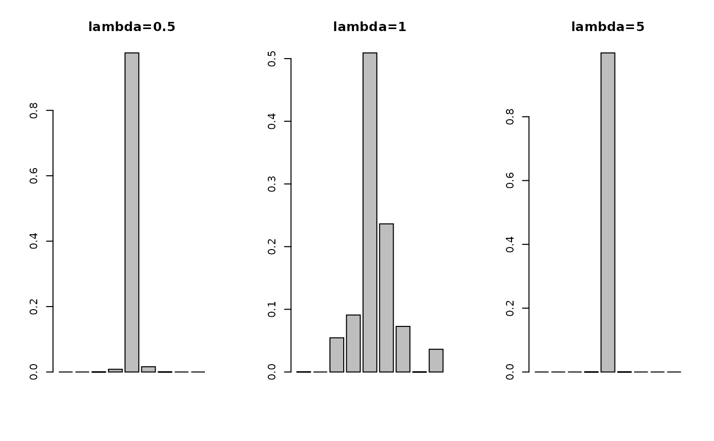

Barycenter by Cuturi & Doucet (2014)
bary14C.RdGiven \(K\) empirical measures \(\mu_1, \mu_2, \ldots, \mu_K\) of possibly different cardinalities, wasserstein barycenter \(\mu^*\) is the solution to the following problem $$\sum_{k=1}^K \pi_k \mathcal{W}_p^p (\mu, \mu_k)$$ where \(\pi_k\)'s are relative weights of empirical measures. Here we assume either (1) support atoms in Euclidean space are given, or (2) all pairwise distances between atoms of the fixed support and empirical measures are given. Algorithmically, it is a subgradient method where the each subgradient is approximated using the entropic regularization.
Usage
bary14C(
support,
atoms,
marginals = NULL,
weights = NULL,
lambda = 0.1,
p = 2,
...
)
bary14Cdist(
distances,
marginals = NULL,
weights = NULL,
lambda = 0.1,
p = 2,
...
)Arguments
- support
an \((N\times P)\) matrix of rows being atoms for the fixed support.
- atoms
a length-\(K\) list where each element is an \((N_k \times P)\) matrix of atoms.
- marginals
marginal distribution for empirical measures; if
NULL(default), uniform weights are set for all measures. Otherwise, it should be a length-\(K\) list where each element is a length-\(N_i\) vector of nonnegative weights that sum to 1.- weights
weights for each individual measure; if
NULL(default), each measure is considered equally. Otherwise, it should be a length-\(K\) vector.- lambda
regularization parameter (default: 0.1).
- p
an exponent for the order of the distance (default: 2).
- ...
extra parameters including
- abstol
stopping criterion for iterations (default: 1e-10).
- init.vec
an initial vector (default: uniform weight).
- maxiter
maximum number of iterations (default: 496).
- print.progress
a logical to show current iteration (default: FALSE).
- distances
a length-\(K\) list where each element is an \((N\times N_k)\) pairwise distance between atoms of the fixed support and given measures.
References
Cuturi M, Doucet A (2014). “Fast computation of wasserstein barycenters.” In Xing EP, Jebara T (eds.), Proceedings of the 31st international conference on international conference on machine learning - volume 32, volume 32 of Proceedings of machine learning research, 685–693.
Examples
#-------------------------------------------------------------------
# Wasserstein Barycenter for Fixed Atoms with Two Gaussians
#
# * class 1 : samples from Gaussian with mean=(-4, -4)
# * class 2 : samples from Gaussian with mean=(+4, +4)
# * target support consists of 7 integer points from -6 to 6,
# where ideally, weight is concentrated near 0 since it's average!
#-------------------------------------------------------------------
## GENERATE DATA
# Empirical Measures
set.seed(100)
ndat = 100
dat1 = matrix(rnorm(ndat*2, mean=-4, sd=0.5),ncol=2)
dat2 = matrix(rnorm(ndat*2, mean=+4, sd=0.5),ncol=2)
myatoms = list()
myatoms[[1]] = dat1
myatoms[[2]] = dat2
mydata = rbind(dat1, dat2)
# Fixed Support
support = cbind(seq(from=-8,to=8,by=2),
seq(from=-8,to=8,by=2))
## COMPUTE
comp1 = bary14C(support, myatoms, lambda=0.5, maxiter=10)
comp2 = bary14C(support, myatoms, lambda=1, maxiter=10)
comp3 = bary14C(support, myatoms, lambda=5, maxiter=10)
## VISUALIZE
opar <- par(no.readonly=TRUE)
par(mfrow=c(1,3))
barplot(comp1, main="lambda=0.5")
barplot(comp2, main="lambda=1")
barplot(comp3, main="lambda=5")

par(opar)